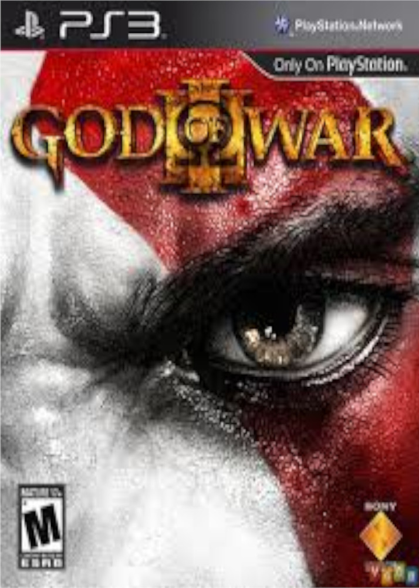

-
God of War 3
God of War III é um jogo eletrônico de ação e aventura e hack and slash desenvolvido pela Santa Monica Studio e publicado pela Sony Computer Entertainment. Foi lançado em 16 de março de 2010 para PlayStation 3.
Data de lançamento inicial: 16 de março de 2010. Plataformas: PlayStation 3, PlayStation 4. Gênero: Ação-aventura Hack and slash. -
God of War Ascension
God of War: Ascension é um jogo eletrônico de ação-aventura, produzido pela Santa Monica Studio e publicado pela Sony Computer Entertainment em exclusivo para a PlayStation 3.[1] É o sétimo título da série God of War o primeiro da cronologia e o primeiro também a ter multijogador.[2][3][4] God of War: Ascension foi lançado em 12 de Março de 2013 na América do Norte e Brasil, a 13 de Março de 2013 na Europa e nas regiões PAL, 14 de Março de 2013 na Austrália e Nova Zelândia e 15 de Março de 2013 no Reino Unido e Irlanda.[5] A jogabilidade de God of War: Ascension é similar aos seus antecessores mas com gráficos e experiência de jogo melhoradas. Foca-se em combates de combos, conseguido seja com a arma principal do jogador (as Lâminas do Caos) seja com armas secundárias adquiridas ao longo do jogo. O jogo irá ter eventos quick-time melhorados que requerem que o jogador complete várias ações no controle numa sequência de tempo para assim derrotar inimigos e chefes mais fortes. O jogo também tem elementos de puzzles e plataformas. Em adição à jogabilidade similar, também tem um sistema de combate e de armas melhorado, novas mecânicas de jogabilidade e conteúdo transferível. Uma beta do multijogador decorreu entre 12 de Dezembro de 2012 e 21 de Janeiro de 2013 Baseado na mitologia grega e a decorrer na Grécia Antiga, o jogador controla o personagem Kratos que tenta cortar os laços com o Deus da Guerra, Ares, - que enganou Kratos levando-o a assassinar a sua família - ao derrotar as três Fúrias. Ascension é cronologicamente o primeiro capítulo da série, fazendo parte de uma saga em que a vingança é o tema central. God of War: Ascension foi no geral bem recebido pela crítica especializada conseguindo uma média de 80/100 no site Metacritic e de 80.11% no GameRankings. Os elogios dirigiram-se mais para os gráficos e para a jogabilidade enquanto que a história, por falta de ideias, foi a principal fonte de críticas. O multijogador, novo na série, teve uma recepção variada nas análises.
Data de lançamento inicial: AN: 12 de março de 2013 BR: 12 de março de 2013 EU: 13 de março de 2013. Plataformas: PlayStation 3. Gênero: Ação-aventura Hack and slash. -
God of War Collection
Os dois games do PS2, God of War e God of War II, foram adaptados para o console da nova geração. Em God of War os jogadores assumem o papel de Kratos, um guerreiro de Esparta atormentado por seu passado que, para vencer o deus Ares, terá que conseguir a Caixa de Pandora, lutando contra um exército de monstros mitológicos, uma legião de soldados mortos-vivos e várias armadilhas mortais. Já em God of War II, Kratos alcançou a imortalidade, mas sedento de poder dá início a uma campanha sangrenta com o seu exército de Espartanos. Mas os Deuses não toleram as suas ações e Kratos sofre uma traição perdendo os seus poderes.
Data de lançamento inicial: AN: 2 julho 2018. Plataformas: PlayStation 3. Gênero: Ação-aventura Hack and slash. -
Red Dead Redemption
Red Dead Redemption é um jogo eletrônico de ação aventura desenvolvido pela Rockstar San Diego e publicado pela Rockstar Games. Ele foi lançado em maio de 2010 para PlayStation 3 e Xbox 360, sendo um sucessor espiritual de Red Dead Revolver lançado em 2004. O jogo se passa em 1911 durante o declínio do Velho Oeste e segue a história de John Marston, um antigo fora-da-lei que tem sua esposa e filho tomados como reféns pelo governo para forçá-lo a trabalhar como seu caçador contratado. Sem escolhas, Marston parte em uma jornada para levar três membros de sua antiga gangue até a justiça. A jogabilidade é apresentada através de uma perspectiva em terceira pessoa dentro de um mundo aberto, permitindo que o jogador interaja com os diferentes elementos da maneira como desejar. O mundo em si é uma versão ficcional da região oeste dos Estados Unidos e do noroeste do México, que o jogador pode atravessar principalmente a pé ou montado em cavalos. Tiroteios enfatizam uma mecânica de jogabilidade chamada de "Olhos da Morte" que permite que vários alvos sejam marcados durante um período de câmera lenta. Red Dead Redemption também possuí um sistema de moralidade, em que as ações do jogador afetam seus níveis de honra e fama e como outros personagens respondem ao protagonista. Um modo multijogador online está incluso no jogo, permitindo que até dezesseis jogadores entrem em partidas cooperativas ou competitivas em recriações dos ambientes do modo um jogador. O desenvolvimento de Red Dead Redemption começou em 2005, com o título empregando o motor de jogo Rockstar Advanced Game Engine a fim de aumentar suas capacidades de animação e renderização. Os desenvolvedores sentiram se inspirados para criar o jogo depois de perceberem o potencial técnico tanto do PlayStation 3 quanto do Xbox 360, já tendo utilizado até o máximo os consoles da sexta geração em seus projetos anteriores. A equipe realizou grandes pesquisas sobre a época e o assunto, visitando locais e analisando filmes de faroeste com o objetivo de alcançar um realismo maior. Captura de movimento foi empregada para gravar os movimentos dos personagens e atores profissionais foram contratados para fazerem a dublagem. Red Dead Redemption foi aclamado pela crítica especializada ao ser lançado, com muitos críticos elogiando seus visuais, música, dublagem, jogabilidade e história. O jogo acabou sendo um sucesso comercial e vendeu mais de quinze milhões de cópias mundialmente. Ele venceu vários prêmios, incluindo nas categorias de Melhor do Ano de diferentes publicações e organizações, sendo considerado um dos melhores jogos da década.
Data de lançamento inicial: PlayStation 3, Xbox 360 AN: 18 de maio de 2010 PAL: 21 de maio de 2010 Switch,PlayStation 4 WW: 17 de agosto de 2023 Windows WW: 29 de outubro de 2024. Plataformas: PlayStation 3 Xbox 360 Nintendo Switch PlayStation 4 Windows. Gênero: Ação-aventura. -
Tomb Raider 2013
Tomb Raider é um videojogo de ação-aventura, décimo título da série Tomb Raider e o quinto produzido pela Crystal Dynamics. Foi publicado pela Square Enix em 5 de Março de 2013 para Microsoft Windows, PlayStation 3 e Xbox 360 e em 2019 para Google Stadia. O primeiro de uma nova continuação, o jogo está definido para não fornecer nenhuma correlação com os lançamentos anteriores da série, sendo um reinicio que dá ênfase às origens da culturalmente influente personagem principal, Lara Croft. A história decorre em Yamatai, uma ilha onde a protagonista e os seus amigos naufragaram. Lara tem que salvá-los, além de ter que lutar contra os habitantes e os perigos naturais da ilha. A jogabilidade foca-se mais na sobrevivência e na ação, embora também se possa usar a exploração para conhecer Yamatai, revisitando locais, ou tentar completar missões secundárias, como as tumbas de desafio opcionais. Depois do lançamento de Tomb Raider: Underworld em 2008, a Crystal Dynamics começou imediatamente a produção de Tomb Raider. Ao invés de criar uma sequela, a equipe decidiu dar um novo recomeço à série, estabelecendo as origens da personagem principal pela segunda vez em um novo reboot. É o primeiro jogo da série que inclui multijogador e o primeiro também a ser publicado pela Square Enix, depois desta ter adquirido a Eidos Interactive em 2009. Camilla Luddington faz a voz de Lara, substituindo Keeley Hawes. Também é o primeiro videojogo da série que tem uma classificação "M" (inadequado a menores de 17 anos) pela Entertainment Software Rating Board (ESRB) e "18" (inadequado a menores de 18 anos) pela Pan European Game Information (PEGI). Depois de adiado o lançamento do final de 2012 para Março de 2013, o jogo criou muita antecipação. Tomb Raider recebeu aclamação critica, com as análises a elogiarem muito os gráficos, a jogabilidade, o desempenho de Luddington como Lara e a história. No entanto a inclusão do multijogador foi a principal fonte de criticas. Um sucesso comercial, vendeu cerca de um milhão de cópias nas primeiras 48 horas e mais de 28,5 milhões no total, tornando-se o jogo da série que mais vendeu. Tomb Raider também recebeu diversos prémios incluindo "Melhor Jogo de Acção-Aventura" para Xbox 360 e PC, atribuído pela IGN. Uma versão actualizada, a Definitive Edition, com gráficos melhorados e todos os conteúdos adicionais foi editada em Janeiro de 2014 para PlayStation 4 e Xbox One.
Data de lançamento inicial: Playstation 3 05 de março de 2013 Xbox 360 05 de março de 2013 Google Stadia 27 de Novembro de 2019. Plataformas: Microsoft Windows PlayStation 3 Xbox 360. Conversões: OS X PlayStation 4 Xbox One Linux Google Stadia. Gênero: Ação-aventura.